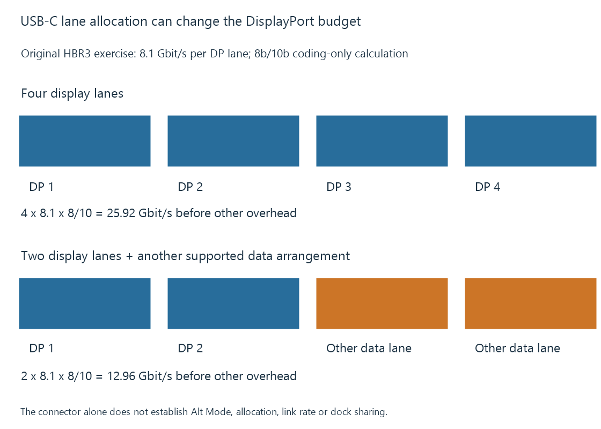

USB-C DisplayPort Alt Mode
USB-C DisplayPort Alt Mode uses a supported USB-C connection arrangement to carry DisplayPort signaling, with lane allocation and adapters determining the available presentation path.
A USB-C connector can support several kinds of connection. DisplayPort Alt Mode is one defined arrangement that uses the supported connector/cable path for DisplayPort signaling.
The connector’s shape alone does not establish that the port, cable or adapter provides that arrangement.
Protocol support has to be present
VESA defines DisplayPort Alt Mode for USB Type-C in collaboration with the USB ecosystem. A supporting source and connected device establish an appropriate mode and lane arrangement.
A charging-only or data-only path can have the same connector shape without exposing the required video route. Power delivery capability is also not a substitute for DisplayPort capability.
For an Emby client connected to a screen through USB-C, identify the source port’s actual video support, the cable and the device at the other end.
Lane allocation can change the display budget
A supported arrangement can assign all four high-speed lanes to DisplayPort, or use a two-lane DisplayPort arrangement alongside other supported data use.
Take an original HBR3 exercise with 8.1 Gbit/s per DisplayPort lane and 8b/10b channel coding:
Four DP lanes: 4 × 8.1 × 8/10 = 25.92 Gbit/s
Two DP lanes: 2 × 8.1 × 8/10 = 12.96 Gbit/s
These are coding-only ceilings before other transport requirements. The two-lane arrangement has half the four-lane budget under these declared assumptions.

This does not identify the policy of every dock. Its negotiated mode, lane rate, compression and internal processing need their own evidence.
A display’s USB hub may influence the chosen arrangement in a product that shares those resources. A resolution supported through a dedicated DisplayPort connection can consequently have different conditions through its USB-C hub route.
Several displays can share one upstream resource
A dock using one upstream DisplayPort link for multiple streams must fit their combined transport demand into its usable resource.
If one original stream needs twelve units of a declared twenty-unit budget, adding another identical stream would require twenty-four. Both cannot fit unchanged under that model.
The model omits packet overhead and is not a dock benchmark. It shows why “supports this mode on one screen” does not imply “supports this mode on every output simultaneously.”
DSC or a different mode can change the demand if the complete path implements it. The number of physical output sockets does not create extra upstream capacity.
Three USB-C video routes should be named accurately
| Route | Presentation relationship |
|---|---|
| DisplayPort Alt Mode | Uses an established alternate-mode lane/signaling arrangement |
| DisplayPort tunneling | Carries a display transport through a supported interconnect’s tunneling route |
| USB graphics device | Produces display output through an implemented USB graphics/data arrangement |
The application, driver and hardware requirements differ. A USB-C-to-HDMI device can also perform an active conversion after receiving DisplayPort.
These routes are not interchangeable merely because the connectors fit.